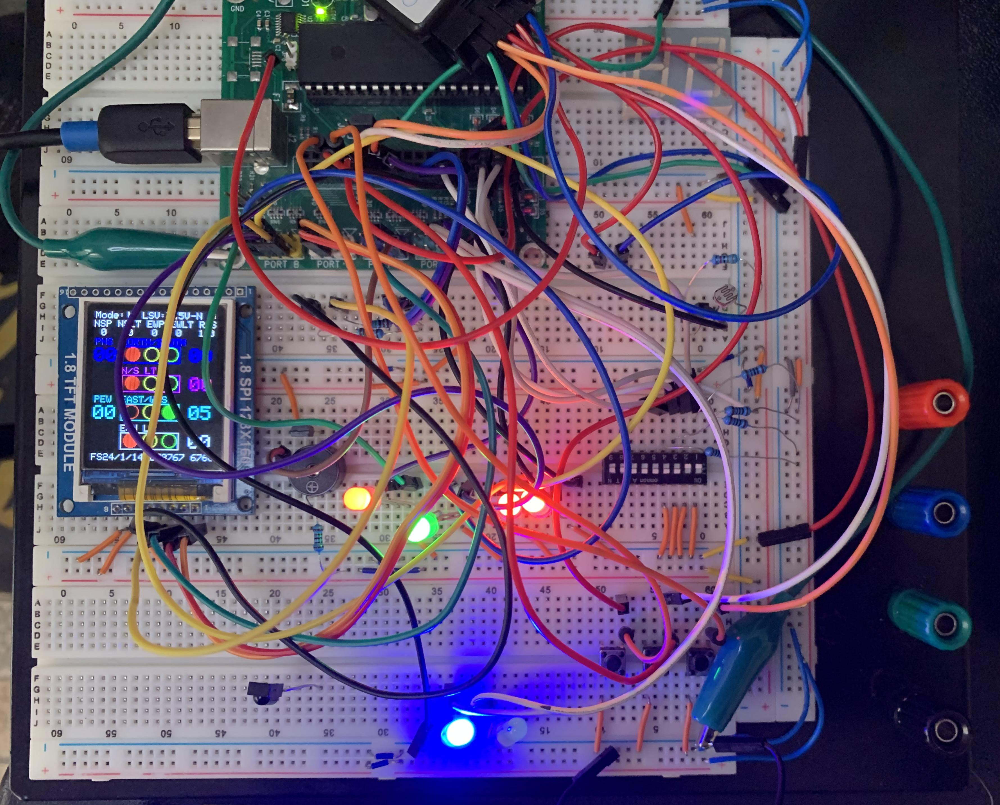

#1. Traffic Controller
Using a PIC18F4321, a TFT LCD pannel and other basic components, I created a simulated traffic light controller that supports four way intersection with left turn lanes and pedestrian crossing. Additionally, the traffic controller also has an emmergency/maintainance mode blinks all of red lights.
The timing of the traffic light is controlled by the onboard hardware timer. The conditional situations such as the left turn lanes and pedestrain crossing lights are activated by buttons for simulation purposes. I used a logic analyzer tool to troubleshoot my code and hardware problems. Overall, this project expanded by project design techniques by utilizing the PIC18F4620's C programming and hardware timing features.

#2. Smart Fan Controller
Using a PIC18F4620, a TFT LCD pannel, a computer fan, and a IR remote, I made a fan control system that mimics most modern smart fans. This controller is capable of sensing temperature and recording time. These two features are used to control the speed of the fan. For example, if the temperature is higher than a temperature set by the user, the fan will speed up or slow down proportionally to the difference in temperature. Additionally, the fan controller has three timer modes that turns the fan on. The fan's speed can also be manually controlled. The IR remote is used to control all the functions which simplifies the user interface.

To accomodate all the features of a smart fan, the system has three LCD screens which represent each mode. The IR remote also function differently between each mode. For example the plus and minus can be used to set the fan's speed in the main screen but will also be used to increase or decrease the temperature value in the fan setup mode. This project utilizes the most important features of a microcontroller such as the Analog to Digital Convertor, the hardware timers, and the Pulse Width Modulation modules. These three types of screens are shown below.
Below are the link to the code and project summary for the above projects.